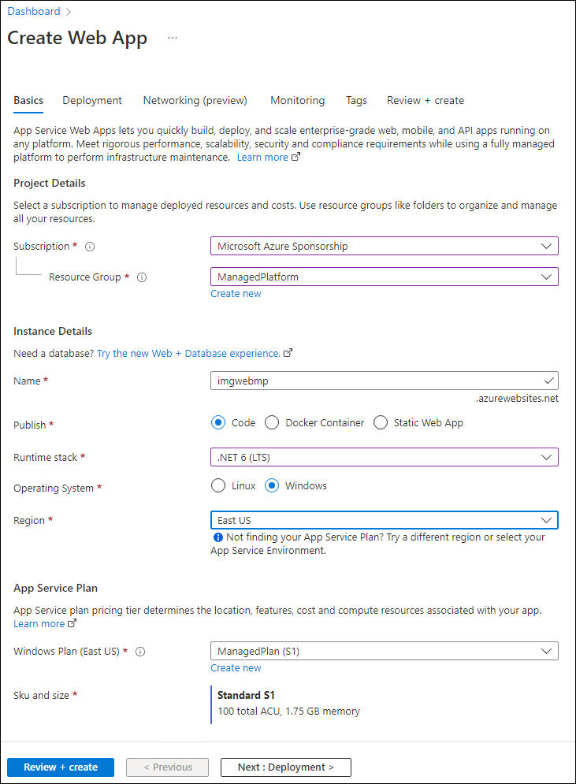

Lab 2: Build a front-end web application by using Azure Web Apps
Task 1: Create a web app
On the Azure portal's navigation pane, select Create a resource.
On the Create a resource blade, in the Search services and marketplace text box, enter Web App, and then select Enter.
On the Marketplace search results blade, select Web App.
On the Web App blade, select Create.
On the Create Web App blade, on the Basics tab, perform the following actions, and then select the Monitoring tab:
| Setting | Action | | -- | -- | | Subscription drop-down list | Retain the default value | | Resource group section | Select ManagedPlatform | | Name text box | Enter imgweb[yourname] | | Publish section | Select Code | | Runtime stack drop-down list | Select .NET 6 (LTS) | | Operating System section | Select Windows | | Region drop-down list | Select the East US region | | Windows Plan (East US) section | Select ManagedPlan (S1) |
The following screenshot displays the configured settings on the Create web app blade.

On the Monitoring tab, in the Enable Application Insights section, select No, and then select Review + create.
From the Review + create tab, review the options that you selected during the previous steps.
Select Create to create the web app by using your specified configuration.
Note: Wait for the creation task to complete before you continue with this lab.
On the Overview blade, select the Go to resource button to navigate to the blade of the newly created web app.
Task 2: Configure a web app
On the App Service blade, in the Settings section, select the Configuration link.
In the Configuration section, perform the following actions, select Save, and then select Continue:
| Setting | Action | | -- | -- | | Application settings tab | Select New application setting | | Add/Edit application setting pop-up dialog | In the Name text box, enter ApiUrl | | Value text box | Enter the web app URL that you copied previously in this lab. Note: Make sure you include the protocol https://, in the URL that you copy into the Value text box for this application setting | | Deployment slot setting text box | Retain the default value, and then select OK |
Note: Wait for the application settings to save before you continue with this lab.
Task 3: Deploy an ASP.NET web application to Web Apps
On the taskbar, select the Visual Studio Code icon.
On the File menu, select Open Folder.
In the File Explorer window, browse to $HOME\training-az204\Labs\01\Starter\Web, and then select Select Folder.
Note: Ignore any prompts to add required assets to build and debug and to run the restore command to address unresolved dependencies.
On the Explorer pane of the Visual Studio Code window, expand the Pages folder, and then select the Index.cshtml.cs file to open the file in the editor.
In the editor, in the IndexModel class on line 30, observe the OnGetAsync method and the code used to retrieve the list of images from the API.
In the IndexModel class on line 41, observe the OnPostAsync method and the code used to stream an uploaded image to the backend API.
On the taskbar, select the Windows Terminal icon.
At the open command prompt, enter the following command, and then select Enter to sign in to the Azure CLI:
az loginIn the Microsoft Edge browser window, enter the email address and password for your Microsoft account, and then select Sign in.
Return to the currently open Windows Terminal Command Prompt window. Wait for the sign-in process to finish.
Enter the following command, and then select Enter to list all the apps in your ManagedPlatform resource group:
az webapp list --resource-group ManagedPlatformEnter the following command, and then select Enter to find the apps that have the imgweb* prefix:
az webapp list --resource-group ManagedPlatform --query "[?starts_with(name, 'imgweb')]"Enter the following command, and then select Enter to render only the name of the single app that has the imgweb* prefix:
az webapp list --resource-group ManagedPlatform --query "[?starts_with(name, 'imgweb')].{Name:name}" --output tsvEnter the following command, and then select Enter to change the current directory to the $HOME\training-az204\Labs\01\Starter\Web directory that contains the lab files:
cd $HOME\training-az204\Labs\01\Starter\Web\Enter the following command, and then select Enter to deploy the web.zip file to the web app that you created previously in this lab:
az webapp deployment source config-zip --resource-group ManagedPlatform --src web.zip --name <name-of-your-web-app>Note: Replace the \
Wait for the deployment to complete before you continue with this lab.
On the Azure portal's navigation pane, select Resource groups.
On the Resource groups blade, select the ManagedPlatform resource group that you created previously in this lab.
On the ManagedPlatform blade, select the imgweb[yourname] web app that you created previously in this lab.
On the App Service blade, select Browse.
Observe the list of images in the gallery. The gallery should list a single image that was uploaded to Storage previously in the lab.
In the Contoso Photo Gallery webpage, in the Upload a new image section, perform the following actions:
a. Select Browse.
b. In the File Explorer window, browse to $HOME\training-az204\Labs\01\Starter\Images, select the bahnmi.jpg file, and then select Open.
c. Select Upload.
Observe that the list of gallery images has updated with your new image.
Note: In some rare cases, you might need to refresh your browser window to retrieve the new image.
Return to the browser window that contains the Azure portal.
Close the currently running Visual Studio Code and Windows Terminal applications.
Review
In this exercise, you created an Azure web app and deployed an existing web application’s code to the resource in the cloud.